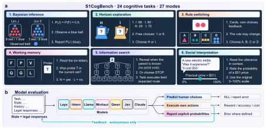

Strengths coexist with failures.
Strong performance on some learning tasks can coexist with failures to gather information or adapt to feedback.
Inspect task-level results ↗What System One Decision Models Can and Cannot Do on Cognitive Experiments
Tohoku University
24 cognitive tasks · 27 evaluation modes · 7 open models

S1CogBench evaluates seven open models on 24 cognitive tasks in 27 modes. It separates predicting human responses, acting in an environment and reporting event probabilities. Each target keeps its original scoring and unit.
Decision-making in humans and AI involves multiple cognitive abilities. System One decision models produce fast, structured choices. Their cognitive strengths and limitations, however, remain poorly understood. We introduce S1CogBench, a benchmark of 24 established cognitive tasks and 27 evaluation modes, evaluating seven open models and the API model Jev. It combines human-response prediction, autonomous execution, and controlled task manipulations to reveal strengths and failures that aggregate scores miss. We find distinct behavioral profiles across the evaluated models. In these models, strong performance on some learning tasks coexists with failures to gather information or adapt to feedback, while high accuracy does not guarantee human-like responses to changing task demands. Shared readout controls show that model rankings depend partly on how choices are extracted. Separate latency comparisons with generative language models show that long responses are much slower than direct decisions, whereas matched one-token generation adds little overhead. To our knowledge, S1CogBench is the first benchmark of System One decision models on established cognitive experiments. It provides a common empirical basis for identifying their capabilities and limitations before integrating them into automated decision systems.
Select a cognitive domain to explore the results. Each task uses its own target and scoring scale, so compare models within a row.
| Domain | Task mode and primary target | Uniform | Full-suite open models | Reference | |||||||
|---|---|---|---|---|---|---|---|---|---|---|---|
| Laya | Intern | Llama | Minitaur | Qwen | Nox | CLM | Value | Type | |||
| Loading Table 3… | |||||||||||
Bold marks the best and underlining the second-best score across all seven open models, before rounding. Gray marks scores not better than Uniform. These annotations keep the same seven-model comparison when columns are hidden.
Bold and underlining mark the best and second-best scores among seven open models, including ties before rounding. Gray marks scores not better than Uniform. Opus, Sonnet, and Haiku are Claude 5.5. API cells marked n.e. are outside the measured full-task scope, n.a. lack a full probability score, n.f. have only non-full prefixes, part. retain incomplete records, and canc. were canceled before generation. inv. marks all-invalid reports, which leave the MAE undefined. NLL keeps only the epsilons of primary source scorers, so a zero human-choice probability can give +∞. Temporal discounting reports preference. Domain gives the organizational domain, not a validated ability.
The reference type marks fits to participants' responses (human fit), other participants' responses without a fitted model (human), the analytic solution or answer key (optimal), and policies without human fitting (algorithm). † recovered fit or policy, § same-participant fit, ‡ within-participant holdout, ∗ new reference, ¶ reference added for the remaining rows. ToMi has no human responses, so its reference is the answer key. s Haiku stated option probabilities, a different readout from the open models. Haiku politeness retains one invalid response of 128 and is +∞ on its valid responses.
Latest scores as CSV · Original arXiv snapshot · Release and readout details · The row behind each cell · Results guide · References and Uniform
Connect an adapter, run the original task protocols and submit your aggregate results for the community leaderboard.
Submit your model through a GitHub pull request. Reviewed contributions appear here after merge, alongside matching maintainer results. Each task and action rule has its own comparison. New cognitive tasks join a separate extension track, listed after the 24 paper tasks.
Submit your results Contribute a task Browse submissions Report an error or suggest a paradigm
Loading community results…
Ranks use the original target and direction, with ties retained. Preference and undefined values have no rank. Maintainer review is not an independent model rerun. Supporting settings and evidence remain linked.
Use the interface and templates for the outputs your model supports.
Model integration guide ↗Acquire the source data, check the installation, then run the complete protocols.
Start the evaluation ↗Package aggregate scores and run settings. Reviewed submissions appear after merge.
Submission instructions ↗One entry point runs each of the 27 modes through its original runner and scorer. The smoke run takes about two minutes on one CPU, with no model weights.
python3.12 -m venv .venv && source .venv/bin/activate
python -m pip install -r requirements.txt
python scripts/fetch_public_sources.py all
python -m s1cogbench doctor
python -m s1cogbench eval --smoke --output runs/smoke
python -m s1cogbench eval --adapter my_agent.py --device cuda:0 --model-label my-model \
--tasks all --output runs/my-modeldoctor until you accept its conditions on Hugging Face and run fetch_public_sources.py psych101.--output must be a new directory inside the repository.The CPU reference policy through this entry point reproduces the CPU validation in all 27 modes. Among neural models, Llama-3.1-8B on a whole A100 is supported. In a pass of 20 calls per mode, all 23 comparable modes match the accepted runs exactly. On a MIG slice of an A100, prompts and identities match but probabilities differ by BF16 rounding steps, so the support does not extend to slices. The other neural models have not run through this entry point. Read the reproduction record
Complete quickstart · Adapter interfaces · Prepare a comparison file
Choose a task from the leaderboard, or below, and a measurement target. Protocols, units, and aggregation stay attached to every result.
Latency records include shared-device execution context and do not establish an isolated model-speed ranking. A task can have coverage across distinct protocol records. Imported files stay in your browser and are marked as user-supplied.
31 source paradigms, their data requirements, and their evaluation entry points. Download the catalogue
Visible histories, legal responses, execution rules, and source-specific scoring.
Original providers, participant splits, versions, and redistribution conditions.
Table 3 marks, retained evidence, and how the aggregate files fit together.
Fit, information, and provenance of every reference, and each Uniform definition.
What the CPU reference checks and the first real-model pass establish, and what they do not.
Input and scored counts of the 24-task, 27-mode reference check.
Jev and Claude settings, parsers, zero-probability targets, and run records.
Client time and usage-priced cost per target, and the cells not completed.
Accepted latency, generated-reasoning, legal-readout, and Claude prefix records.
Per-mode timings of nine configurations on one A100 at batch size one.
Use the same task, target, mode, protocol, unit, and aggregation.
Reference fits and algorithms carry their own exposure and provenance. Human-action NLL and autonomous reward are separate comparison targets.
Strong performance on some learning tasks can coexist with failures to gather information or adapt to feedback.
Inspect task-level results ↗High accuracy does not guarantee human-like responses when task demands change. The controlled conditions reveal these differences.
Explore the measurements ↗Shared readout controls show that model rankings depend partly on how choices are extracted.
Compare matching protocols ↗@misc{hou2026s1cogbench,
title = {{S1CogBench}: What System One Decision Models Can and Cannot Do on Cognitive Experiments},
author = {Hou, Dengzhe and Yamada, Kazunori D},
year = {2026},
eprint = {2611.00911},
archivePrefix = {arXiv},
primaryClass = {cs.CL},
url = {https://arxiv.org/abs/2611.00911}
}